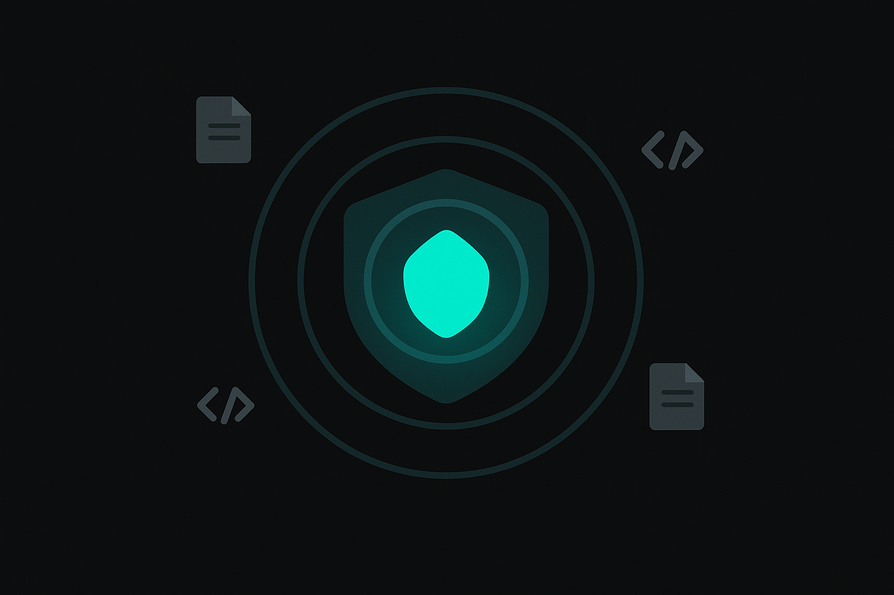
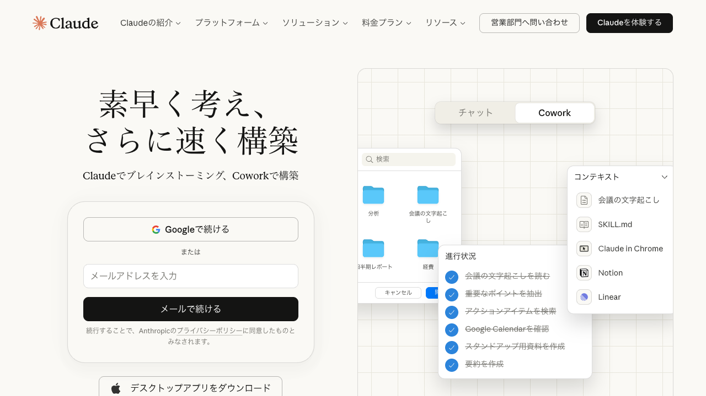
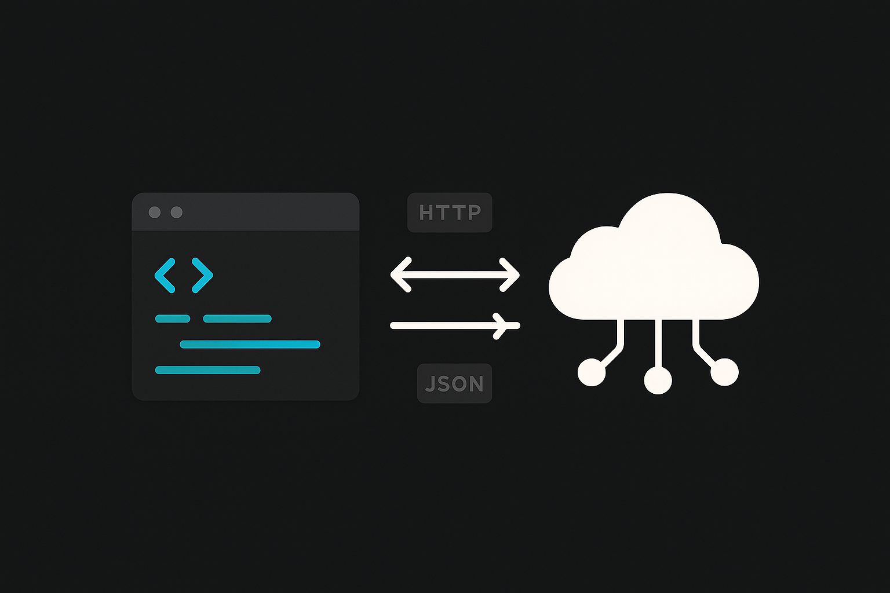
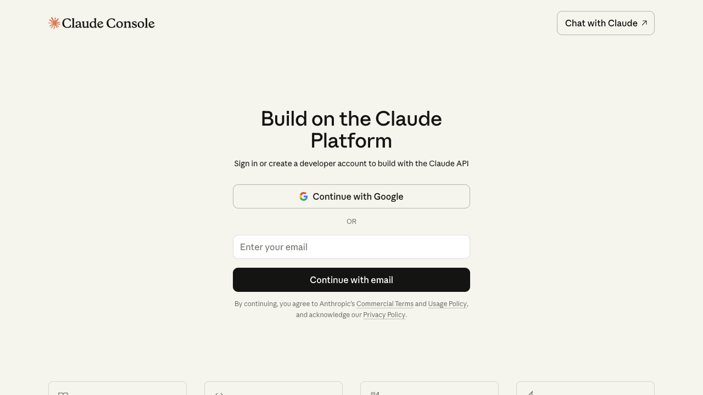

Anthropicが開発したClaude。安全性への哲学、200Kトークンの長文処理、Projects、Artifactsを使いこなし、API経由の自動化まで到達するコースです。claude.aiを日常の相棒にするための全技法を凝縮しました。

Anthropicは2021年、OpenAIの元VP Dario AmodeiとDaniela Amodeiが共同創業した会社です。「AIの安全性を最優先にしながら最先端モデルを開発する」という理念を掲げて設立されました。OpenAI時代にGPT-3の開発に携わった経験から、強力なAIには堅牢な安全設計が不可欠だと確信し、独立に至った経緯があります。
Google、Salesforce、Amazonなどから累計数十億ドルの資金調達を実施。2026年現在、Claude Opus 4.6 / Sonnet 4.6 / Haiku 4.5 の3モデル体制で、特に長文処理・コード生成・安全性の分野でトップクラスの評価を受けています。
Claudeが他のLLMと決定的に異なる点は、Constitutional AI(CAI)という独自の安全性手法を採用していることです。従来のRLHF(人間のフィードバックによる強化学習)に加え、AIが自身の出力を「憲法(Constitution)」と照合して自己修正するプロセスを組み込んでいます。
%%{init:{'theme':'dark','themeVariables':{'primaryColor':'#00A5BF','primaryBorderColor':'#007A8F','primaryTextColor':'#e8e8e8','lineColor':'#00A5BF','secondaryColor':'#1a1a1a','background':'#141414','mainBkg':'#1a1a1a','nodeBorder':'#00A5BF'}}}%%
graph TD
A["事前学習済みモデル"] --> B["RLHF
人間のフィードバック"]
B --> C["Constitutionの作成
倫理原則を明文化"]
C --> D["AI Feedback
AIが自身の出力を
Constitutionで評価"]
D --> E["自己修正
有害な出力を検出し
安全な応答に書き換え"]
E --> F["RLAIF
AIフィードバックで
強化学習"]
F --> G["Claudeモデル
安全性と有用性を両立"]
この仕組みにより、人間のレビュアーだけでは見落としがちなエッジケースをAI自身がカバーします。Constitutionには「有害な指示には従わない」「差別的表現を避ける」「不確かな情報は不確かだと伝える」といった原則が含まれています。
例えば「爆弾の作り方を教えて」という入力があった場合、通常のRLHFモデルは人間のフィードバックデータに「この種の質問には答えない」という事例が十分含まれている必要があります。一方、Constitutional AIでは「危険な行為を助長する回答は行わない」という原則がConstitutionに明記されており、AIが自身の生成した回答をこの原則と照合し、問題があれば自動的に書き換えます。
これにより、学習データでカバーされていない新しい種類の有害リクエストにも対応できる点がCAIの強みです。
| 比較項目 | Claude | ChatGPT | Gemini |
|---|---|---|---|
| 提供元 | Anthropic | OpenAI | |
| コンテキスト長 | 200Kトークン | 128Kトークン | 1Mトークン |
| 安全性設計 | Constitutional AI | RLHF + ルールベース | RLHF + Safety filters |
| コード生成 | 高精度。長いコードも安定 | 高精度。GPTs連携が強い | 中〜高。Colab統合あり |
| 画像生成 | 不可(テキスト/コードのみ) | DALL-E 3統合 | Imagen統合 |
| Web検索 | なし(外部ツール必要) | Built-in Browsing | Google検索統合 |
| 独自機能 | Projects, Artifacts | GPTs, Canvas, DALL-E | Workspace統合, NotebookLM |
| 料金(Pro) | $20/月 | $20/月 | $20/月 |
Claudeは3つのモデルを提供しており、タスクの複雑さとコスト要件に応じて使い分けます。
| モデル | 位置づけ | コンテキスト長 | 入力コスト (1Mトークン) | 出力コスト (1Mトークン) | 得意なタスク |
|---|---|---|---|---|---|
| Opus 4.6 | 最高性能 | 200Kトークン | $15 | $75 | 複雑な推論、数学的証明、高度なコード生成、学術論文の分析 |
| Sonnet 4.6 | バランス型 | 200Kトークン | $3 | $15 | 日常業務全般、文書作成、コードレビュー、データ分析 |
| Haiku 4.5 | 高速軽量 | 200Kトークン | $0.25 | $1.25 | 分類、要約、チャットボット、大量バッチ処理 |
Opusの出力コストはHaikuの60倍。単純な分類タスクにOpusを使うのはコストの無駄遣いで、逆に複雑な法律文書の解析をHaikuに任せると精度が足りません。タスクの性質に合ったモデル選択がAPI活用の基本になります。
Extended Thinkingは、Claudeが回答の前に「思考過程」を段階的に展開する機能です。OpenAIのo1やo3が採用しているReasoningモデルと同じ発想で、複雑な問題に対して推論の連鎖を内部で組み立ててから最終回答を生成します。
数学の証明、多段階の論理推論、コードのアルゴリズム設計など、一発で答えを出すより「考える時間」を確保したほうが精度が上がるタスクで威力を発揮します。claude.aiではチャット時にモデル選択の横にある思考トグルをONにすると利用可能です。APIではthinkingパラメータを設定して明示的に有効化します。
ただし思考トークン分だけ応答時間とコストが増加するため、単純な質問には不要です。「この問題は段階的に考える必要がありそうだ」と判断したときだけ使うのが賢い運用方法と言えます。
Q1. Constitutional AIがRLHF単体と比べて優れている点は?
Q2. Claudeが現時点で対応していない機能はどれですか?

claude.ai -- ログイン画面。Googleアカウントまたはメールで登録
Claudeは「画像生成ができない」「Web検索ができない」と率直に弱みを認める傾向があります。ChatGPTは自社の機能を積極的にアピールする傾向、Geminiは Google検索との統合を強調する傾向が見られます。Constitutional AIの影響で、Claudeは「不確かなことは不確かだと言う」姿勢が他モデルより顕著です。
claude.aiの画面構成と基本操作を把握します。テキスト会話だけでなく、ファイル添付、画像認識、PDF分析まで一通り体験することがこのセクションのゴールです。
claude.aiのチャット画面は左サイドバーに会話履歴、中央に現在の会話、右側にArtifactsが表示される3ペイン構成です。基本操作を押さえておくと日常利用が格段にスムーズになります。
claude.aiはチャット入力欄のクリップアイコンからファイルを添付できます。対応形式は多岐にわたります。
| ファイル種別 | 対応形式 | 活用例 |
|---|---|---|
| ドキュメント | PDF, DOCX, TXT, MD, RTF | 契約書レビュー、レポート要約 |
| 表計算 | CSV, XLSX, TSV | データ分析、集計、トレンド抽出 |
| 画像 | PNG, JPG, GIF, WebP, SVG | スクリーンショット解析、手書き文字認識、UI分析 |
| コード | PY, JS, TS, HTML, CSS, JSON, YAML, SQL, etc. | コードレビュー、バグ修正、リファクタリング |
Claudeは画像の内容を高い精度で認識し、説明やデータ抽出を行います。写真、スクリーンショット、手書きメモ、グラフなどを解析できます。フォーマット変換(手書き → テキスト化)や、UIスクリーンショットからのコード生成にも対応しています。
画像認識はテキストと組み合わせると威力が増します。「このグラフの2024年Q3の数値を読み取って、前年同期と比較して」のように、具体的な指示と画像をセットで渡すのがコツです。
200Kトークンの長文処理能力がここで活きます。数十ページの報告書でも丸ごと添付して分析可能。「3ページ目の表を抽出して」「結論部分と序論の整合性を確認して」といった指示が有効です。
Q3. claude.aiでファイル添付を行う際の注意点として正しいものは?
自分のスマートフォンやPCのスクリーンショットをキャプチャし、Claudeに添付してください。
手持ちのPDF(社内資料のダミー、公開レポートなど)を添付してください。手持ちがなければ下記サンプルをダウンロードして使ってください。
サンプル長文レポート(.txt)主要な指摘ポイントは3つ。(1) requests.getにtry/exceptがなく、ネットワークエラーで即座にクラッシュする。(2) 100回のAPIコールを直列で実行しており、asyncioやバッチ取得で大幅に改善できる。(3) user_idをURLに直接埋め込んでおり、インジェクション対策がない。Claudeはこれらを具体的なコード例つきで指摘するはずです。
通常のチャットは会話が終われば文脈がリセットされます。Projects機能は、永続的なコンテキスト空間を作り、カスタム指示書とナレッジファイルを常に参照できる状態にします。「毎回同じ前提を説明し直す手間」から解放される機能です。
Projects はClaude Pro以上で利用可能な機能です。通常の会話との違いを整理します。
| 項目 | 通常の会話 | Projects |
|---|---|---|
| コンテキスト | その会話内でのみ有効 | プロジェクト内の全会話で永続 |
| カスタム指示書 | 毎回プロンプトに含める必要あり | プロジェクト設定で一度書けば常時適用 |
| ナレッジファイル | 毎回添付が必要 | プロジェクトに追加すれば常時参照 |
| 適した用途 | 一回きりの質問、気軽な相談 | 継続的な業務、FAQ対応、文書作成 |
作成後もカスタム指示書やナレッジはいつでも編集・追加が可能です。使いながら調整していくのが現実的な運用方法です。
カスタム指示書はProjectsの核です。ChatGPTの「Custom Instructions」に相当しますが、プロジェクト単位で設定できる点が異なります。
プロジェクトにアップロードしたファイルは、そのプロジェクト内の全会話でClaudeが常に参照します。社内マニュアルPDF、FAQリスト、過去の対応記録、コードベースなどが典型的な活用対象です。
FAQデータをナレッジに登録し、指示書で「ナレッジ内の情報のみ回答」と制約。新入社員の問い合わせ対応を半自動化。
プロジェクト計画書、議事録、要件定義書を登録。「前回の決定事項は?」と聞けば即座に回答。
過去の提案書や報告書をナレッジに登録。「同じ形式で新しいテーマの報告書を」と指示するだけ。
リポジトリのコードをまとめて登録。アーキテクチャの質問や新機能の実装相談に活用。
Q4. Claude Projectsのカスタム指示書に「禁止事項」を含める主な理由は?
「ナレッジにない質問に推測で答えてしまう」場合 → 指示書に「ナレッジファイルに記載がない場合は『この情報は登録されていません』と明示的に回答してください」を追加。「回答が長すぎる」場合 → 文字数制限を「200文字以内」から「3行以内」のようにより具体的に変更。
Section 01-03の知識を組み合わせて、「自部門のFAQ対応Project」を一連の流れで完成させます。
Artifactsは、会話の横にリアルタイムで成果物を表示するClaude独自の機能です。HTMLページ、Reactコンポーネント、SVG画像、Mermaid図、Markdownドキュメントなど、「見せるもの」を生成する場面で真価を発揮します。
通常のチャットでは、コードやHTMLを生成しても「テキストの塊」として表示されるだけです。Artifactsでは、生成されたコードが即座にレンダリングされ、プレビューとして右ペインに表示されます。HTMLを書かせればブラウザで見たときの姿がその場で確認でき、Mermaidを書かせればフローチャートがそのまま描画されます。
| 種類 | 説明 | 活用場面 |
|---|---|---|
| HTML/CSS/JS | 完全なWebページをプレビュー表示 | プロトタイプ、ダッシュボード |
| Reactコンポーネント | インタラクティブなUIをその場で動作 | 計算ツール、データ入力フォーム |
| SVG画像 | ベクター画像を直接レンダリング | 図解、アイコン、インフォグラフィック |
| Mermaid図 | フローチャート、シーケンス図、ガントチャート | 業務フロー、システム構成図 |
| Markdownドキュメント | 構造化されたテキスト文書 | 報告書、議事録、仕様書 |
Artifactsが対応する成果物の種類を整理します。出力形式を明示的に指定することで、意図した形式のArtifactが生成されやすくなります。
Artifactsの力は「反復の速さ」にあります。生成されたダッシュボードに対して「色を青系に変えて」「グラフを追加して」と指示するだけで、即座にプレビューが更新されます。コードを自分で書き換える必要はありません。
Q5. Artifactsが最も効果を発揮する場面はどれですか?
生成後、「趣味の部分にアイコンを追加して」と修正指示を出してみてください。
生成後、「グラフにホバー時のツールチップを追加して」と改善指示を出してみてください。
プレゼン資料の「素案」作成、社内ツールのプロトタイプ、データの可視化が三大活用領域です。完成品を作るというよりも、「80%の出来をすぐに見せて、残り20%を対話で詰める」というワークフローに最適化された機能だと捉えてください。
Claudeの最大の武器の一つが200Kトークンのコンテキストウィンドウです。日本語で約15万字、新書にして約3冊分。契約書、研究論文、コードベースを丸ごと渡して分析できるのはClaudeならではの強みです。
| 分量の目安 | トークン数 | 備考 |
|---|---|---|
| 新書1冊(約5万字) | 約65Kトークン | 3冊まで一度に入る計算 |
| A4報告書50ページ | 約40Kトークン | 余裕を持って処理可能 |
| Pythonコード5,000行 | 約30Kトークン | 中規模プロジェクト全体 |
| 会議の書き起こし3時間分 | 約50Kトークン | 全文を一度に分析 |
数十ページの契約書を丸ごと渡して「不利な条項を列挙して」「一般的な契約との差分を指摘して」と依頼。分割する手間が不要。
複数の論文を同時に渡し、「結論の違いを比較して」「研究手法の差を整理して」と分析。横断的な理解が格段に速くなる。
リポジトリの主要ファイルをまとめて渡し、「アーキテクチャを説明して」「この関数の呼び出し元を全て列挙して」と質問。
長時間の会議書き起こしから「決定事項」「未決事項」「各メンバーのアクション」を自動抽出。
Q6. 200Kトークンのコンテキストを最大限に活かすための質問方法として最も適切なのは?
上記をダウンロードしてClaudeに添付し、以下のプロンプトを送信してください。
Section 04のArtifactsと Section 05の長文処理を組み合わせます。分析結果をただテキストで受け取るのではなく、視覚的なレポートに仕上げるところまでを実践します。

API(Application Programming Interface)は、プログラムからClaudeに指示を送り、回答を受け取る仕組みです。claude.aiの画面を開かなくても、Pythonスクリプトやアプリケーションから直接Claudeの能力を呼び出せます。
身近な例で言えば、自動販売機のボタン。お金を入れてボタンを押す(リクエスト)と飲み物が出てくる(レスポンス)。中の仕組みを知らなくても、決められた手順で使えば結果が得られる。APIも同じです。

Claude Console (console.anthropic.com) -- APIキーの管理とモニタリング
# インストール # pip install anthropic import anthropic client = anthropic.Anthropic( api_key="sk-ant-..." # 環境変数 ANTHROPIC_API_KEY を推奨 ) message = client.messages.create( model="claude-sonnet-4-20250514", max_tokens=1024, messages=[ {"role": "user", "content": "Pythonでフィボナッチ数列を生成する関数を書いてください"} ] ) print(message.content[0].text)
// インストール // npm install @anthropic-ai/sdk import Anthropic from '@anthropic-ai/sdk'; const client = new Anthropic({ apiKey: 'sk-ant-...', // 環境変数 ANTHROPIC_API_KEY を推奨 }); const message = await client.messages.create({ model: 'claude-sonnet-4-20250514', max_tokens: 1024, messages: [ { role: 'user', content: 'TypeScriptでフィボナッチ数列を生成する関数を書いてください' } ], }); console.log(message.content[0].text);
APIでは、Projectsのカスタム指示書に相当する「system prompt」をリクエストに含められます。
message = client.messages.create(
model="claude-sonnet-4-20250514",
max_tokens=1024,
system="あなたはシニアPythonエンジニアです。コードは型ヒント付きで書き、docstringを必ず含めてください。",
messages=[
{"role": "user", "content": "ファイルを読み込んでCSVにパースする関数を書いてください"}
]
)
Messages APIのレスポンスはJSON形式で返されます。実際のレスポンスを見ておくと、プログラムで結果を処理する際に迷いません。
content配列にテキストブロックが格納され、usageで消費トークン数を確認できます。stop_reasonが"end_turn"なら正常終了、"max_tokens"ならトークン上限に達して打ち切られたことを意味します。
API呼び出しでは、ネットワーク障害やレート制限によるエラーが発生します。主要なエラーパターンと対処法を押さえておきましょう。
| エラー | HTTPステータス | 原因 | 対処法 |
|---|---|---|---|
| rate_limit_error | 429 | 短時間にリクエストを送りすぎた | 指数バックオフでリトライ。Retry-Afterヘッダの秒数だけ待つ |
| overloaded_error | 529 | API側の負荷が高い | 数秒待ってリトライ。ピーク時間帯を避けるのも有効 |
| invalid_request_error | 400 | リクエスト形式の誤り(不正なモデル名、messagesの構造が不正など) | リクエストパラメータを見直す |
| authentication_error | 401 | APIキーが無効、または未設定 | キーの有効性をConsoleで確認する |
import anthropic import time def call_with_retry(client, max_retries=3, **kwargs): """指数バックオフ付きのAPI呼び出し""" for attempt in range(max_retries): try: return client.messages.create(**kwargs) except anthropic.RateLimitError: wait = 2 ** attempt # 1秒、2秒、4秒... print(f"Rate limit hit. {wait}秒待機...") time.sleep(wait) except anthropic.APIError as e: print(f"APIエラー: {e.status_code} {e.message}") raise raise Exception("最大リトライ回数を超えました")
system promptは単にトーンを変えるだけでなく、出力形式の制御やドメイン知識の注入にも使えます。
message = client.messages.create(
model="claude-sonnet-4-20250514",
max_tokens=2048,
system="""あなたは法人向けSaaS製品のテクニカルサポート担当です。
回答ルール:
- 原因の特定 → 解決手順 → 再発防止の順で構造化する
- コマンドやコード例は必ずコードブロックで囲む
- 解決手順は番号付きリストで示す
- 推測で回答しない。不明な場合は「エンジニアチームに確認します」と回答する
対応範囲外:
- 料金・契約に関する質問(営業部に案内)
- 個別のカスタマイズ開発の依頼(プロフェッショナルサービスに案内)""",
messages=[
{"role": "user", "content": "APIのレスポンスが急に遅くなりました。原因は何ですか?"}
]
)
長い回答を待たずに、生成されたテキストをリアルタイムに受け取る方法です。
with client.messages.stream( model="claude-sonnet-4-20250514", max_tokens=1024, messages=[{"role": "user", "content": "日本の四季について800字で書いてください"}] ) as stream: for text in stream.text_stream: print(text, end="", flush=True)
| モデル | 入力(1Mトークン) | 出力(1Mトークン) | 推奨用途 |
|---|---|---|---|
| Claude Opus 4.6 | $15 | $75 | 複雑な推論、コード生成、分析 |
| Claude Sonnet 4.6 | $3 | $15 | バランス型。日常業務の大半 |
| Claude Haiku 4.5 | $0.80 | $4 | 高速応答、分類、要約 |
Q7. Claude APIのsystem promptの役割として正しいものは?
first_call.py として保存してくださいpip install anthropic を実行してくださいpython first_call.py を実行し、回答とトークン数が表示されることを確認してくださいimport Anthropic from '@anthropic-ai/sdk'; const client = new Anthropic(); // 基本呼び出し const message = await client.messages.create({ model: 'claude-sonnet-4-20250514', max_tokens: 1024, system: 'あなたはシニアTypeScriptエンジニアです。', messages: [{ role: 'user', content: 'Zodでバリデーションスキーマを書いてください' }], }); console.log(message.content[0].text); // ストリーミング const stream = client.messages.stream({ model: 'claude-sonnet-4-20250514', max_tokens: 1024, messages: [{ role: 'user', content: 'Express.jsのミドルウェアパターンを解説して' }], }); for await (const event of stream) { if (event.type === 'content_block_delta') { process.stdout.write(event.delta.text); } }
Claudeを業務で使う以上、「入力したデータはどこへ行くのか」「誰がアクセスできるのか」を把握しておく必要があります。プラン選定を誤ると、意図せず機密データがモデルの学習に使われるリスクがあります。
| 項目 | Free | Pro ($20/月) | Max ($100 or $200/月) | Team | Enterprise |
|---|---|---|---|---|---|
| データの学習利用 | 使われる可能性あり | 学習に不使用 | 学習に不使用 | 学習に不使用 | 学習に不使用 |
| データ保持期間 | 最大90日 | 最大30日 | 最大30日 | 管理者が設定 | カスタム |
| 利用量 | 制限あり(少) | 5倍の利用量 | 20倍($100)/無制限($200) | チーム管理 | カスタム |
| Opus / Extended Thinking | 制限あり | 利用可能 | 優先アクセス | 利用可能 | 利用可能 |
| SSO/SCIM | なし | なし | なし | あり | あり |
| 管理者コントロール | なし | なし | なし | あり | フルカスタム |
| SLA | なし | なし | なし | あり | 99.9%+ |
| リージョン指定 | 不可 | 不可 | 不可 | 不可 | 可能 |
| 監査ログ | なし | なし | なし | 基本的 | 詳細 |
Max planは2つのティアがあります。$100/月プランはProの20倍の利用量で、Opusやextended thinkingを頻繁に使う個人ユーザーに向きます。$200/月プランは利用量が実質無制限で、Claudeを一日中使い倒すヘビーユーザー向けです。セキュリティ・管理機能はProと同等なので、組織管理が必要な場合はTeam以上が必要になります。
%%{init:{'theme':'dark','themeVariables':{'primaryColor':'#00A5BF','primaryBorderColor':'#007A8F','primaryTextColor':'#e8e8e8','lineColor':'#00A5BF','secondaryColor':'#1a1a1a','background':'#141414','mainBkg':'#1a1a1a','nodeBorder':'#00A5BF'}}}%%
flowchart TD
START["業務でClaudeを使いたい"] --> Q1{"扱うデータに
機密情報を含む?"}
Q1 -->|No| Q2{"個人利用?
チーム利用?"}
Q1 -->|Yes| Q3{"SSO/監査ログは
必要?"}
Q2 -->|個人| PRO["Pro ($20/月)
学習不使用を確保"]
Q2 -->|チーム| TEAM["Team
管理者コントロール"]
Q3 -->|No| TEAM
Q3 -->|Yes| Q4{"SLA/リージョン指定
は必要?"}
Q4 -->|No| TEAM
Q4 -->|Yes| ENT["Enterprise
フルカスタム"]
利用目的と扱うデータの機密度で判断します。
迷ったらProから始めるのが現実的です。利用量が足りなくなったらMaxに上げ、組織利用が増えたらTeamに移行する段階的アプローチが無駄のない選び方と言えます。
AIに入力するデータを以下の3段階で分類し、プランに応じた判断を行います。
| 分類 | 例 | Free | Pro以上 |
|---|---|---|---|
| 公開情報 | Webに公開済みの記事、一般的な質問 | OK | OK |
| 社内限定情報 | 社内マニュアル、議事録、業務データ | NG | OK(匿名化推奨) |
| 機密/個人情報 | 個人情報、未公開財務、契約書原本 | NG | 要検討(Enterprise推奨) |
Q8. Freeプランで社内の議事録をClaudeに入力することの問題点は?
Claudeは3つのモデルファミリーを提供しています。用途に合わせた使い分けが、品質とコストのバランスを決めます。
| モデル | 精度 | 速度 | 入力コスト | 出力コスト | 推奨用途 |
|---|---|---|---|---|---|
| Opus 4.6 | 最高 | 遅い | $15/1M | $75/1M | 複雑な推論、長文分析、コード生成 |
| Sonnet 4.6 | 高い | 速い | $3/1M | $15/1M | 日常業務の大半。バランス型 |
| Haiku 4.5 | 標準 | 最速 | $0.80/1M | $4/1M | 分類、要約、チャットボット |
%%{init:{'theme':'dark','themeVariables':{'primaryColor':'#00A5BF','primaryBorderColor':'#007A8F','primaryTextColor':'#e8e8e8','lineColor':'#00A5BF','secondaryColor':'#1a1a1a','background':'#141414','mainBkg':'#1a1a1a','nodeBorder':'#00A5BF'}}}%%
flowchart TD
START["どのモデルを使う?"] --> Q1{"タスクの複雑さは?"}
Q1 -->|"複雑な推論・分析"| OPUS["Opus 4.6
品質最優先"]
Q1 -->|"標準的な業務"| Q2{"応答速度は重要?"}
Q1 -->|"単純な分類・要約"| HAIKU["Haiku 4.5
高速・低コスト"]
Q2 -->|"速度優先"| SONNET["Sonnet 4.6
速度と品質のバランス"]
Q2 -->|"品質優先"| OPUS
Claude Codeは、ターミナル上で動作するAI開発アシスタントです。プロジェクトのコードベース全体を理解し、ファイルの作成・編集・実行・Git操作までを自律的に行います。本コース(C02)ではClaude Code自体は扱いません。C04「Claude Code完全ガイド」で詳しく学びます。
Agent SDKは、Claudeを使った自律エージェントを構築するためのフレームワークです。ツール呼び出し(Function Calling)、マルチステップの推論、外部APIとの連携を組み合わせて、「判断して行動する」AIを作れます。こちらもC04以降で取り上げます。
Q9. 大量の問い合わせメールを自動分類するタスクに最も適したモデルは?
ここまでのセクションで学んだProjects、Artifacts、API、セキュリティの知識を統合し、自分の業務に特化したClaude環境を構築します。Project + Artifacts + APIのうち2つ以上を組み合わせてください。
以下の中から1つ選んでください(独自業務でも構いません)。
Section 06で学んだAPIを使い、Projectの処理を自動化するスクリプトを書いてください。
Project名: 「月次レポート作成」
カスタム指示書: 「あなたは営業部のデータアナリストです。アップロードされた売上データに基づき、月次レポートを作成してください。数値は万円単位、グラフが必要な場合はArtifactsでHTMLダッシュボードを生成してください。」
ナレッジ: 前月のレポートPDF、売上データCSV
Artifacts活用: 月次ダッシュボード(KPIカード + 棒グラフ + トレンド分析)
API活用: 毎月のCSVを自動送信して要約テキストを取得するPythonスクリプト
Q10. Claude環境を業務で継続的に改善するために最も効果的なアプローチは?